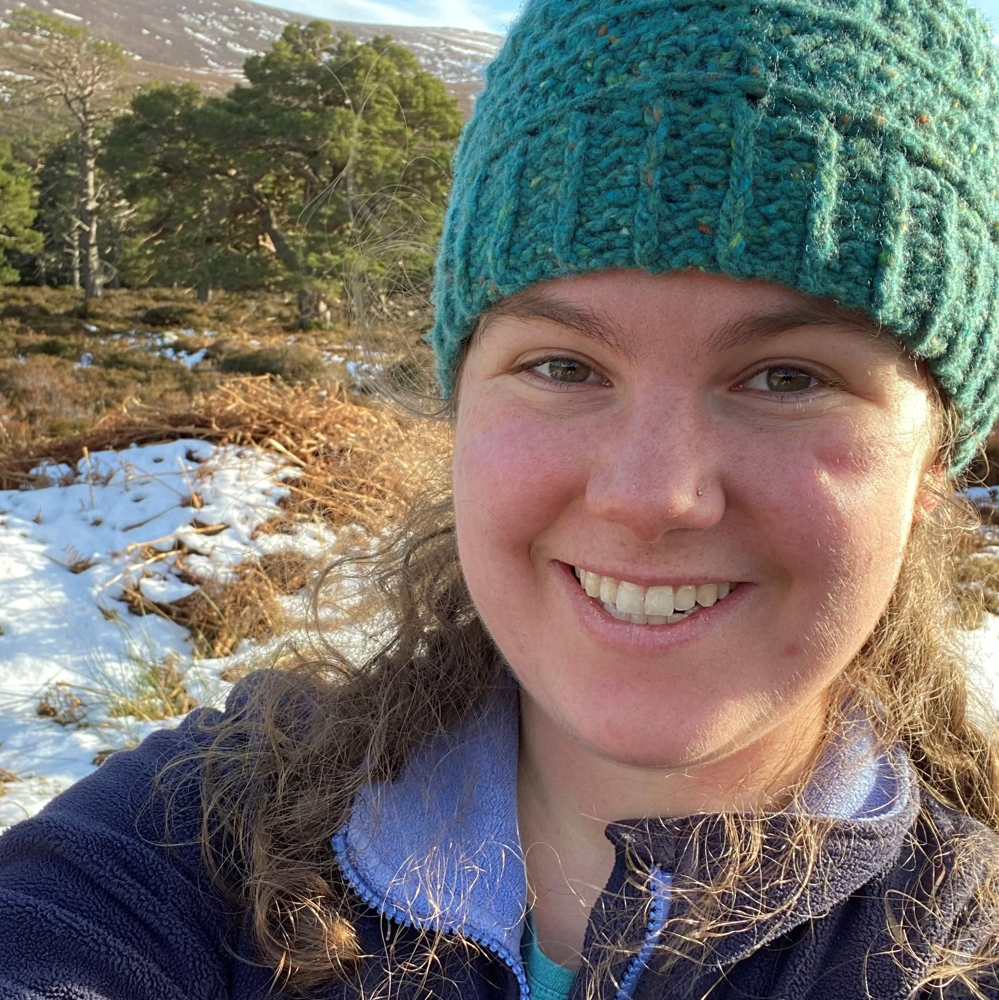
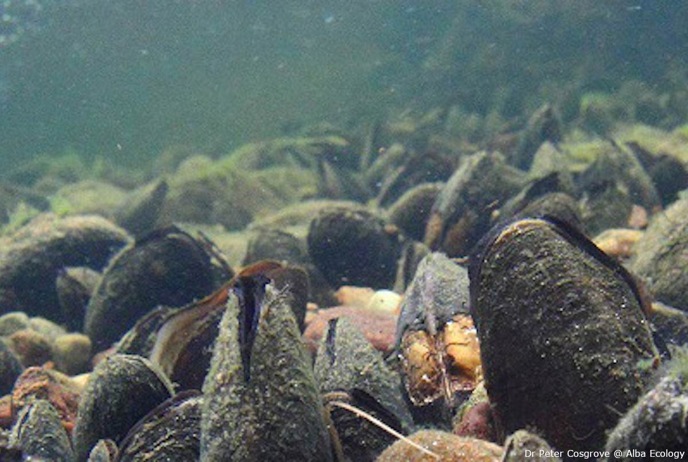
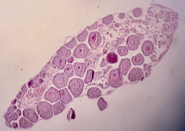

About me

For my funded SUPER DTP Ph.D project, I am integrating genomics and modelling to investigate reasons for freshwater pearl mussel decline in Scotland. I received my MSci in Marine Biology from the University of Southampton. During this time, I studied six months each at the University Centre in Svalbard and the University of Gothenburg.
Read More.
As a neurodiverse first-generation researcher, I am passionate about accessibility and inclusivity. I started a group for neurodiverse and disabled post-graduate researchers within the School of Biological Sciences at the University of Aberdeen where we share help and advice. I have also recently completed First Aid for Mental Health - Level 2.
When I am not working on my PhD, you can find me on dog walks, foraging or swimming in the beautiful coast of Aberdeenshire or in the Cairngorms. Follow me on Bluesky at @vicgillman where I post about my work and accessibility.
Projects

Integrating genomics and modelling to predict climate change response in the endangered freshwater pearl mussel
SUPER DTP funded PhD 2021–2025. PI: Dr Kara Layton. Other supervisors: Dr Victoria Pritchard, Dr Lesley Lancaster, and Dr Stuart Piertney.
Preprint: Genomic evidence of local adaptation in Scottish freshwater pearl mussels

Gametogenic ecology of Antarctic Brittle Star Ophionotus victoriae
MSci thesis 2018. Supervised by Dr Laura Grange.
My Skills
Communication
As a dyslexic researcher I have focused on communicating well through flow, structure and signposting my audience. I have practised this through presentations, scientific articles and outreach work such as BioBlitz, Community Safety Street Action Days and my work in Girlguiding UK.
Team Work
I have worked both within labs in academia (LaytonLab) and within teams in external roles such as in the Community Safety team at my local council and lifeguarding teams where the aim is to work cohesively to prevent injury and save lives.
Coding
I love coding. R was my first language and this has developed into command line for bioinformatics and HTML for this website. Check out this map I made from my ancestry.com data!
Data Visualisation
I love making neat and informative data visualisations. I am well versed with ggplot2 in R and representative colour schemes.
Get in contact
I am always happy to chat about what I am up to and how I can help you out!